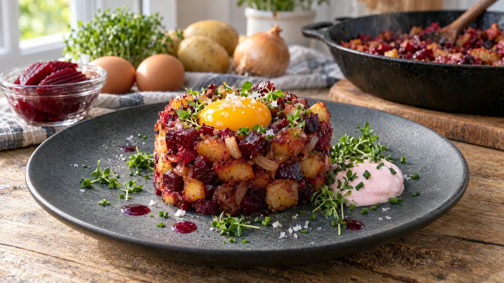

RESTFEST · RECEPTHuvudrätt · Frukost & brunch
Rödbetspytt i torn med gyllene äggula
Gårdagens kokta potatis, en burk inlagda rödbetor och en gul lök blir ett rubinrött torn med krispiga kanter. Överst vilar en lysande äggula som smälter ner i pytten när du skär i den. Pyttipanna i finkläder, perfekt till en långsam helgbrunch.
- Förberedelse
- 15 min
- Tillagning
- 20 min
- Portioner
- 4
- Nivå
- Nybörjare
 Det här behöver du
Det här behöver du
JÄMFÖRT MED DIN KYL
Tryck på + vid det du behöver köpa.
Pytt
Till servering
Gör så här
- Skär potatisen i tärningar, ca 1 cm. Skalet kan sitta kvar. Finhacka löken.
- Skär rödbetorna i lika stora tärningar och lägg dem på hushållspapper så att de torkar. Blöta rödbetor gör potatisen mjuk i stället för krispig.
- Hetta upp 2 msk smör och oljan i en stor stekpanna (minst 28 cm) på medelhög värme. Lägg i potatisen i ett jämnt lager och låt den steka orörd i 4–5 minuter innan du vänder. Stek totalt 12–15 minuter tills den är gyllene och krispig. Har du en mindre panna, stek i två omgångar.
- Lägg i löken och resten av smöret. Stek 4–5 minuter till löken är mjuk och lätt gyllene.
- Vänd ner rödbetorna och timjan och stek 2 minuter till. Smaka av med salt och peppar.
- Rör ner rödbetslagen i crème fraichen så att den blir rosa.
- Ställ en matring (7–8 cm) på en tallrik, fyll den med pytt och tryck till lätt med en sked. Gör en liten grop i mitten och lyft försiktigt bort ringen. Saknar du ring, pressa pytten i ett glas och stjälp upp den.
- Dela äggen och lägg en hel äggula i gropen på varje torn. Den varma pytten värmer gulan lätt.
Dekoration och servering
- Strö krasse och gräslök runt tornet, inte över äggulan, så att den syns.
- Lägg en klick rosa crème fraiche bredvid och droppa några prickar rödbetslag på tallriken.
- Avsluta med några flingsaltkorn och nymald peppar på äggulan.
- Servera på mörka tallrikar så att färgerna lyser.
- Vill du undvika rå äggula, toppa tornen med ett stekt ägg med flytande gula i stället.
Mått och ugnstemperaturer
Måtten är svenska (dl, msk, tsk, krm). Ugnstemperaturerna gäller vanlig ugn med över- och undervärme; med varmluft, sänk med 20 grader.